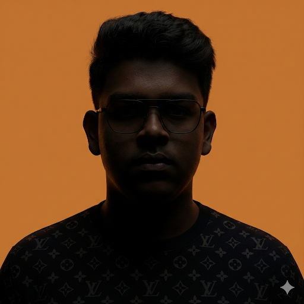
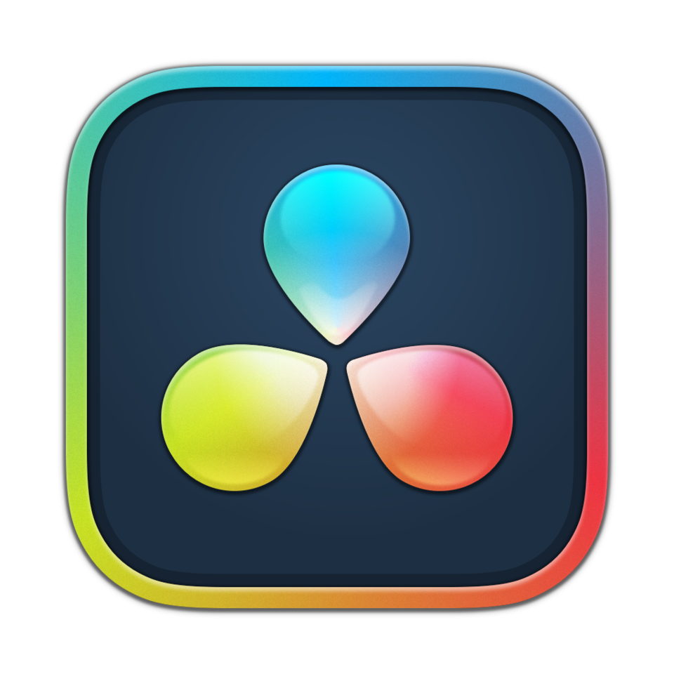

Vignan Sri Harsha
Hardware Architecture
Built, configured, and optimized a high-performance system centered on the Ryzen microarchitecture. Focused on comprehensive thermal management and voltage balancing, achieving a stable static 4.2 GHz clock at 1.352V for maximum computational integrity under heavy creative loads.

Digital Media Synthesis
Synthesizing technical precision with collaborative storytelling to produce high-impact digital artifacts. Focused on leveraging diverse toolsets to drive engagement on leading creative and social platforms.
Platform Growth & Engagement
Scaling content across YouTube and Instagram by analyzing algorithm trends, audience retention curves, and deploying targeted visual hooks to reach over 1 million organic views.

Dynamic Video Engineering
Synthesizing heavy narrative editing and color grading in DaVinci Resolve with the rapid, platform-native pacing of CapCut to create trailer-style cinematics and high-retention short-form content.
3D Asset Creation
Currently expanding my technical stack by learning Blender, focusing on the foundational principles of procedural modeling, lighting, and spatial rendering to elevate future media synthesis.
Visual Composition
A minimalist collection focusing strictly on light, geometry, and composition. This gallery lets the visual artifacts speak for themselves, showcasing my approach to narrative depth through photography.
Strategic Execution
Operating in a volatile, closed-system environment that functions as a high-speed 5v5 chess and timing masterpiece. Reached Ascendant tier by maintaining a top-tier 75% KAST (Kill, Assist, Survive, Trade) rating, prioritizing economic management, and executing split-second probability calculations.

Athletic Leadership
Grounding technical systems optimization in physical discipline. Represented my team to win gold medals in Volleyball and Kabaddi during Class 10 intramural competitions, proving traditional teamwork, leadership, and athletic execution.